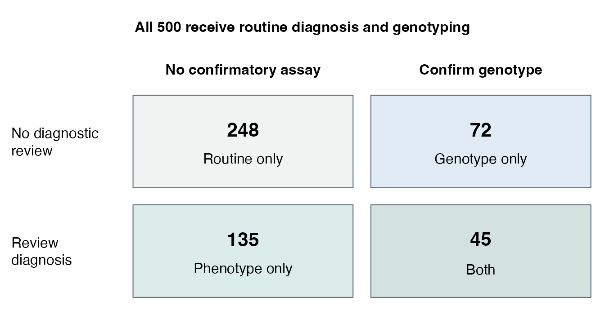
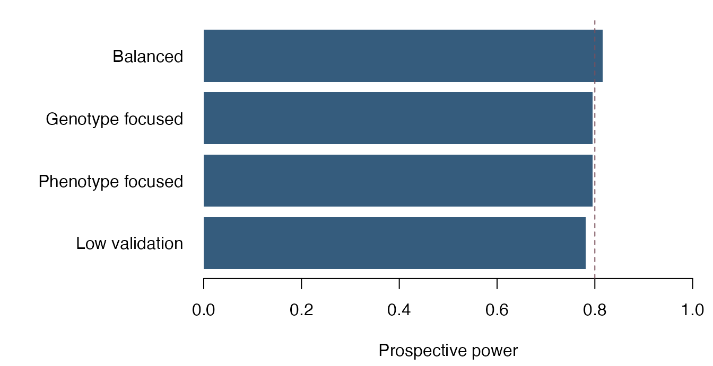

7. LRTae Power and Sample-Size Design
paweh package authors
Source:vignettes/paweh-07-lrtae-study-design.Rmd
paweh-07-lrtae-study-design.RmdWhich measurements should the team confirm?
A clinic plans to recruit 500 unrelated people to study whether a DNA variant is more common in patients with a disease than in unaffected controls. Everyone will receive a routine diagnosis and a laboratory genotype call. The team can pay for a specialist’s diagnostic review and a confirmatory assay, but cannot give both to everyone. A case recorded as a control can make the groups look more alike. An incorrect genotype call can obscure a difference even when the diagnosis is right. Can the team still detect the difference it expects? Which measurements would be most useful to confirm, and how many people would it need for 80% power?
The Likelihood Ratio Test Allowing for Error (LRTae) compares two explanations for the measurements: the true genotype distribution is the same in cases and controls, or it differs. Both explanations allow routine measurements to be wrong. When a routine result and a more reliable result are available for the same person, the pair helps distinguish a measurement error from a real difference between groups.
Here validation means checking a person’s measurement against a reference assessment. It is different from testing the accuracy of statistical software. In double-sampling, some people receive both the routine measurement and the reference assessment of the same trait. Keep the routine result even when the two disagree. The model treats the reference result as the truth; a specialist review or second assay does not automatically meet that standard.
This is a prospective calculation: before anyone is recruited, we specify what the study might look like and ask how often the test would detect the assumed association. To run the examples, first load the package.
Decide who receives each reference assessment
The phenotype is the person’s disease status. The genotype here is the number of copies of one chosen allele (version of the DNA sequence). Everyone gets both routine measurements. The four tiers in the diagram describe only what is added. For example, someone who receives both reference assessments belongs in the fourth tier and is counted once.
tier_counts <- list(
n_fallible = 248,
n_pheno_validated = 135,
n_geno_validated = 72,
n_both_validated = 45
)
The two decisions cross: read down for diagnostic review and across for the confirmatory genotype assay. Each participant occupies one cell.
The four counts add to 500 individual participants, including 180 with a reference diagnosis (135 + 45) and 117 with a reference genotype (72 + 45). The two reference-assessment totals overlap; adding them would count 45 people twice. There are no family trios in this design.
For lrtae_ncp() and lrtae_power(), supply
these four counts because the study size is fixed. For
lrtae_mssn(), the total is what we want to find. Supply the
same four categories as shares of whatever total will
be recruited: 49.6%, 27.0%, 14.4% and 9.0%, respectively.
Describe the study before routine measurement
For a single variant with two alleles, let 0, 1 and 2 mean copies of the chosen allele. For example, if that allele is A, the genotypes GG, AG and AA have 0, 1 and 2 copies. Always use this order, and count the same allele, in both groups and in the error matrix.
| Argument | What to supply |
|---|---|
true_control_genotype_frequencies |
Fractions of true controls with 0, 1 and 2 copies, before any measurement errors. |
true_case_genotype_frequencies |
The corresponding fractions among true cases. They describe the association the team wants to be able to detect. |
true_sampling_proportions |
The planned fractions of study participants who are true controls and true cases, in that order. |
Each vector sums to one (up to numerical rounding); its entries must be positive. These supplied design values are deterministic: running the example again uses the same numbers.
p_control <- c(0.5645454545, 0.3739393939, 0.0615151515)
p_case <- c(0.36, 0.48, 0.16)
q <- c(0.5, 0.5)Here about 6.15% of true controls and 16% of true cases carry two
copies. That difference is part of the assumed association. In
q = c(0.5, 0.5), half of the sample is expected to be true
controls and half true cases. Investigators can recruit equal groups
even for a rare disease: q describes the study composition,
not disease prevalence in the source population. With imperfect
diagnoses the proportions recorded as cases and controls can
also differ from q.
From true categories to routine results
For each true category, imagine following 100 people through the
routine measurement. Where would their results be recorded? The
probabilities of those destinations form one row of a
misclassification matrix. Columns are the observed
categories. Diagonal entries mean the measurement is correct.
byrow = TRUE fills the R matrix one true category at a
time.
phenotype_error <- matrix(
c(0.98, 0.02,
0.04, 0.96),
nrow = 2,
byrow = TRUE
)
genotype_error <- matrix(
c(0.965, 0.025, 0.010,
0.025, 0.950, 0.025,
0.010, 0.025, 0.965),
nrow = 3,
byrow = TRUE
)| Observed control | Observed case | |
|---|---|---|
| True control | 0.98 | 0.02 |
| True case | 0.04 | 0.96 |
Among true controls, 98% are recorded as controls and 2% as cases. Among true cases, 4% are recorded as controls and 96% as cases. The second row does not say that 4% of recorded controls have the disease: that would ask the reverse question.
| Observed 0 | Observed 1 | Observed 2 | |
|---|---|---|---|
| True 0 | 0.965 | 0.025 | 0.010 |
| True 1 | 0.025 | 0.950 | 0.025 |
| True 2 | 0.010 | 0.025 | 0.965 |
Read the middle row from left to right. If the true genotype has
one copy, the routine assay calls zero copies 2.5% of
the time, one copy 95%, and two copies 2.5%. Each row accounts for all
possible calls and sums to one. Both matrices are assumptions for
planning; paweh does not estimate them from patient
records. A team might use a pilot study with paired assessments to
choose plausible values.
Where did these inputs come from? The package examples and earlier draft attribute them to a development workbook; an independent copy establishing the complete input set was not verified. There is a close published relative. Gordon, Finch and Kim (2020), section 4.2.1.4, pp. 138–141, give the same genotype frequencies to printed precision and the same genotype error matrix. Their 500-person replicate has 45 people checked on both traits; Tables 4.1–4.2 give 117 genotype and 180 phenotype checks in total, consistent with all four counts above. But the book uses 5% for a true case recorded as a control, versus 4% here. Its fitted statistic of 24.1626 (p. 144) is for one simulated dataset. The calculations below illustrate a design; they do not reproduce that statistic or a published power benchmark.
Will 500 people suffice, and how many are needed?
Collect the assumptions under the function argument names so that the
same inputs can be reused. In R, do.call() passes a list of
named arguments to a function. The fixed-design calls combine the model
inputs with tier_counts.
model_inputs <- list(
true_control_genotype_frequencies = p_control,
true_case_genotype_frequencies = p_case,
true_sampling_proportions = q,
phenotype_misclassification_matrix = phenotype_error,
genotype_misclassification_matrix = genotype_error
)Start with lrtae_ncp(). Its noncentrality
parameter (NCP) measures how far the expected test-statistic
distribution under the assumed association separates from the
distribution under no association. Equal true genotype frequencies give
zero separation. At the same significance level and degrees of freedom,
a larger NCP gives a greater chance of detecting the association. The
NCP describes a study design; it is neither an observed test statistic
nor a p-value.
Use lrtae_power() to translate that separation into a
probability. alpha = 0.05 sets a nominal 5% chance of
declaring association when there is none. The large-sample test has two
degrees of freedom: once two of the three genotype frequencies are
known, the third must complete the sum to one. Power is the chance of
exceeding the test’s cutoff if the specified case and control
frequencies really differ as assumed.
Now turn the question around. Target power of 0.80
means the team wants to detect that difference in at least 80% of
comparable studies. Ask lrtae_mssn() for the minimum sample
size necessary (MSSN). Keep the error matrices, genotype frequencies,
case/control mix and significance level the same; replace fixed counts
with the requested proportions.
historical_mssn <- do.call(
lrtae_mssn,
c(
model_inputs,
list(
target_power = 0.80,
alpha = 0.05,
prop_fallible = 248 / 500,
prop_pheno_validated = 135 / 500,
prop_geno_validated = 72 / 500,
prop_both_validated = 45 / 500
)
)
)| Question | Participants | NCP | Power |
|---|---|---|---|
| Recruit 500 as planned | 500 | 22.4083 | 99.25% |
| Recruit for 80% power | 216 | 9.6850 | 80.22% |
The 500-person plan exceeds the target. Its NCP of 22.4083 corresponds to 99.25% power: about 99 in 100 studies would detect this particular difference if the assumptions hold. At the same validation shares, the team can meet its 80% target with 216 participants. Their integer allocation gives 80.22% power. Neither percentage is the probability that the variant causes the disease.
Turn validation shares into people
A clinic cannot book a fraction of a participant. The Hamilton largest-remainder rule first gives each tier the whole part of its quota. It then gives the remaining places, one each, to the tiers with the largest fractional remainders. The package resolves exact ties in its argument order: routine only, phenotype only, genotype only, then both.
Try it with just 10 places and the same shares. The quotas are 4.96, 2.70, 1.44 and 0.90. Start with 4, 2, 1 and 0 people. The three remaining places go to routine only (0.96), both (0.90) and phenotype only (0.70), giving 5 + 3 + 1 + 1 = 10. This illustrates rounding, not a recommendation to run a ten-person study.
Apply the same rule to the 216-person recruitment plan:
| Tier | Share | Quota | Whole | Remainder | Assigned |
|---|---|---|---|---|---|
| Routine only | 49.6% | 107.136 | 107 | 0.136 | 107 |
| Phenotype only | 27.0% | 58.320 | 58 | 0.320 | 58 |
| Genotype only | 14.4% | 31.104 | 31 | 0.104 | 31 |
| Both | 9.0% | 19.440 | 19 | 0.440 | 20 |
The whole parts sum to 215. The largest remainder is 0.440 in the both-validated tier, so its 19 becomes 20. The final counts are 107 + 58 + 31 + 20 = 216. The last tier now has 20/216, or about 9.26%, slightly above the requested 9%. The rule keeps the counts close to the requested shares while filling every place. It does not search for the best use of a validation budget.
Which checks make a difference at 220 people?
Suppose recruitment is capped at 220. The team can change the reference assessments but keeps the same biological assumptions, measurement errors, case/control mix and 5% significance level. Each row below is a different plan for those same 220 places. In particular, the two focused designs move 33 checks from one measurement to the other without changing the number of people checked.
allocations <- data.frame(
design = c(
"Low validation", "Phenotype focused", "Genotype focused", "Balanced"
),
n_fallible = c(198, 154, 154, 110),
n_pheno_validated = c(9, 44, 11, 33),
n_geno_validated = c(9, 11, 44, 33),
n_both_validated = c(4, 11, 11, 44),
stringsAsFactors = FALSE
)
design_results <- lapply(seq_len(nrow(allocations)), function(index) {
counts <- as.list(allocations[index, 2:5])
do.call(lrtae_power, c(model_inputs, counts, list(alpha = 0.05)))
})
allocations$N_total <- rowSums(allocations[2:5])
allocations$NCP <- vapply(design_results, function(x) x$ncp, numeric(1))
allocations$Power <- vapply(design_results, function(x) x$power, numeric(1))| Design | Routine only | Phenotype only | Genotype only | Both | Total | NCP | Power |
|---|---|---|---|---|---|---|---|
| Low validation | 198 | 9 | 9 | 4 | 220 | 9.2307 | 78.172% |
| Phenotype focused | 154 | 44 | 11 | 11 | 220 | 9.5365 | 79.568% |
| Genotype focused | 154 | 11 | 44 | 11 | 220 | 9.5383 | 79.576% |
| Balanced | 110 | 33 | 33 | 44 | 220 | 10.0216 | 81.630% |

Probability of detecting the assumed association at 220 people. The dashed line marks the 80% target.
Only the balanced design clears 80% (81.63%). It puts 110 people in at least one validation tier, including 44 who get both checks. The low-validation plan checks just 22 people and reaches 78.17%. The focused plans reach 79.568% and 79.576%: switching the focus has little practical effect here, and neither reaches the target. This comparison holds recruitment fixed, not spending. Confirming both measurements for more people may cost substantially more. Different error rates, genotype frequencies or validation costs could favor a different plan.
Technical detail: what information does validation add?
The contrast of interest, , is the difference between control and case frequencies for the first two genotypes. The third difference is determined by the first two. The direction here is control minus case. The expected information measures how precisely the planned measurements can distinguish these differences. A reference diagnosis tells us which disease group a participant actually belongs to; a reference genotype tells us which genotype category contributed the observation. The four tiers therefore contribute different amounts of information per person.
The NCP combines the size of the assumed difference with the information available to detect it:
Why efficient information? The association contrasts are not the only unknowns in an eventual analysis. The background genotype distribution and the true sampling mix also affect what is observed. Those are nuisance parameters for this question: necessary to describe the data, but not the differences being tested. The calculation allows for uncertainty about them even though planning values are supplied.
The information matrix and its Schur complement
The package adds the expected information from each tier, weighted by its participant count. Write the resulting matrix in blocks for the frequency contrasts and nuisance parameters . Here consists of the free case genotype frequencies and the true control sampling share. The error-matrix entries are held fixed in this calculation. The Schur complement is the block calculation
The first term is the information about the contrasts if the nuisance parameters were known. The subtraction accounts for information shared with those parameters. With three genotype categories, the 5% cutoff of the central chi-square distribution on two degrees of freedom is about 5.9915. Power is the area above that same cutoff in a noncentral chi-square distribution with the design’s NCP. This uses expected measurements across possible studies; no likelihood is fitted to an individual dataset.
What could make the plan unreliable?
Can the measurements distinguish the explanations? If many people have a positive routine diagnosis, that could reflect more true cases or more false positives. Without enough paired routine and reference diagnoses, the observed labels alone may not identify both explanations separately. This is an identifiability problem. In an analysis that estimates error rates, the corresponding validation data help separate them. Here the rates are supplied; too little independent information about the modeled frequency parameters can still make the nuisance information matrix singular (it has no inverse). A singularity means this calculation cannot distinguish the required parameters for that design. It does not mean that every tier must be nonempty or that every method for misclassification will fail.
Would the assumptions travel to this clinic? The calculation uses one phenotype error matrix across genotypes and one genotype error matrix across disease groups; the model combines these error processes independently given the true categories. If the confirmatory assessment itself often errs, the pilot differs from the recruits, or the laboratory calls cases less accurately than controls, the quoted power may be misleading. Before choosing a recruitment target, rerun the design with plausible higher and lower error rates (adjust each diagonal so its row still sums to one) and with a smaller case/control difference. The power calculation uses a large-sample approximation, which also warrants caution with sparse categories.
Do you have a design or patient records? These functions take design probabilities and tier sizes. Barral et al. describe software that instead fits likelihoods to observed counts and tests an association. That requires observed data and estimation steps outside the scope of these planning functions. LTTae is a different, trend-based test that assigns scores to genotypes; LRTae here tests differences in the genotype distribution. Neither sequencing depth nor individual read errors are inputs. For a study starting from sequence reads, see the sequencing study design vignette.
Methods and references
- Ji F, Yang Y, Haynes C, Finch SJ, Gordon D. Computing asymptotic power and sample size for case-control genetic association studies in the presence of phenotype and/or genotype misclassification errors. Statistical Applications in Genetics and Molecular Biology. 2005;4:Article 37. This is the primary methodological source for the prospective NCP and its use for power and recruitment. Integer tier assignment is described here as a package rule.
- Barral S, Haynes C, Stone M, Gordon D. LRTae: improving statistical power for genetic association with case/control data when phenotype and/or genotype misclassification errors are present. BMC Genetics. 2006;7:24. This paper describes the observed-data software and illustrates its use with an ankylosing spondylitis application.
- Gordon D, Finch SJ, Kim W. Heterogeneity in Statistical Genetics: How to Assess, Address, and Account for Mixtures in Association Studies. Springer; 2020. Chapter 4, sections 4.2.1.1–4.2.1.4, covers the measurement groups, observed likelihoods, test and worked example; section 4.2.2 introduces LTTae. Chapter 5, section 5.2.3, discusses empirical LRTae power from simulations, a different route from the analytical power above.
Session information
sessionInfo()
#> R version 4.6.1 (2026-06-24)
#> Platform: aarch64-apple-darwin23
#> Running under: macOS Tahoe 26.6.2
#>
#> Matrix products: default
#> BLAS: /Library/Frameworks/R.framework/Versions/4.6/Resources/lib/libRblas.0.dylib
#> LAPACK: /Library/Frameworks/R.framework/Versions/4.6/Resources/lib/libRlapack.dylib; LAPACK version 3.12.1
#>
#> locale:
#> [1] C.UTF-8/C.UTF-8/C.UTF-8/C/C.UTF-8/C.UTF-8
#>
#> time zone: America/New_York
#> tzcode source: internal
#>
#> attached base packages:
#> [1] stats graphics grDevices utils datasets methods base
#>
#> other attached packages:
#> [1] paweh_0.99.0
#>
#> loaded via a namespace (and not attached):
#> [1] gtable_0.3.6 jsonlite_2.0.0 dplyr_1.2.1 compiler_4.6.1
#> [5] tidyselect_1.2.1 dichromat_2.0-1 jquerylib_0.1.4 systemfonts_1.3.2
#> [9] scales_1.4.0 textshaping_1.0.5 yaml_2.3.12 fastmap_1.2.0
#> [13] ggplot2_4.0.3 R6_2.6.1 generics_0.1.4 knitr_1.51
#> [17] htmlwidgets_1.6.4 tibble_3.3.1 desc_1.4.3 bslib_0.12.0
#> [21] pillar_1.11.1 RColorBrewer_1.1-3 rlang_1.3.0 cachem_1.1.0
#> [25] xfun_0.60 fs_2.1.0 sass_0.4.10 S7_0.2.2
#> [29] otel_0.2.0 cli_3.6.6 pkgdown_2.2.1 magrittr_2.0.5
#> [33] digest_0.6.39 grid_4.6.1 mvtnorm_1.4-2 lifecycle_1.0.5
#> [37] vctrs_0.7.3 evaluate_1.0.5 glue_1.8.1 farver_2.1.2
#> [41] ragg_1.5.2 rmarkdown_2.31 tools_4.6.1 pkgconfig_2.0.3
#> [45] htmltools_0.5.9